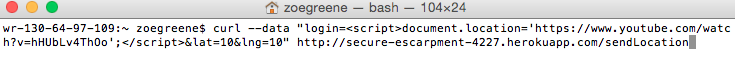

Introduction
Description of the product and what I was hired to do
Methodology
Describe your methodology when testing the application, including the tools that you used
Abstract of Findings
Provide an overview of all the security and privacy issues you identified. This section should be written for non-technical managers who do not have technical expertise and do not have time to read the entire document. Write this section using lay language.
Issues Found
Accessibility of other client's information
- Issue: Any user can access the stored location and time of all the other users in the database by querying logins that are not equal to their own.
- Location: GET function, /location.json
- Severity of Issue: This issue is of high severity because it allows private information on one's whereabouts to be publicly accessible to users that could be pesky or even dangerous.
- Description of Issue: I found it by typing the following into the URL in the browser. CREATES AN ASSOCIATIVE ARRAY
- Proof of vulnerability: Another stored user and their information became available to me. It only returned one user's information because his code specifies find(1) in the GET function. PUT NEW SCREENSHOT IN
- Resolution: ENCODE TO TAKE OUT SPECIAL CHARACTERS?
Vulnerability to XSS Part 1
- Issue: Does not prevent against the injection of JavaScript input from users
- Location: POST SEE PIAZZA THING ON THIS
- Severity of Issue: Moderate. The issue is easily preventable (see resolution below), but if not protected against it could allow malicious and persistent re-directs to unsavory websites that are viewable by all users of the page.
- Description of Issue: I found this issue by entering the following text as curl data and refreshing the page to have it redirect to a catchy Kesha video.

- Proof of Vulnerability: The page automatically redirects to the following.

- Resolution: DISALLOW CHARACTERS SUCH AS < AND USE CHARACTER ENCODING FOR JAVASCRIPT
Doesn't accept inputted login info if there is no lat and lng
For each issue that you find, document:
1. Issue (e.g., database injection, really bad programming practice)
2. Location / page where issue was found
3. Severity of issue (e.g., low, medium , or high). Justify your answer.
4. Description of issue. How did you find it? A screenshot of problem is excellent.
5. Proof of vulnerability.Screenshots are ideal.
6. Resolution
How did you resolve the issue? Show code if possible.
Conclusion
You can also list future considerations and recommendations with costs.